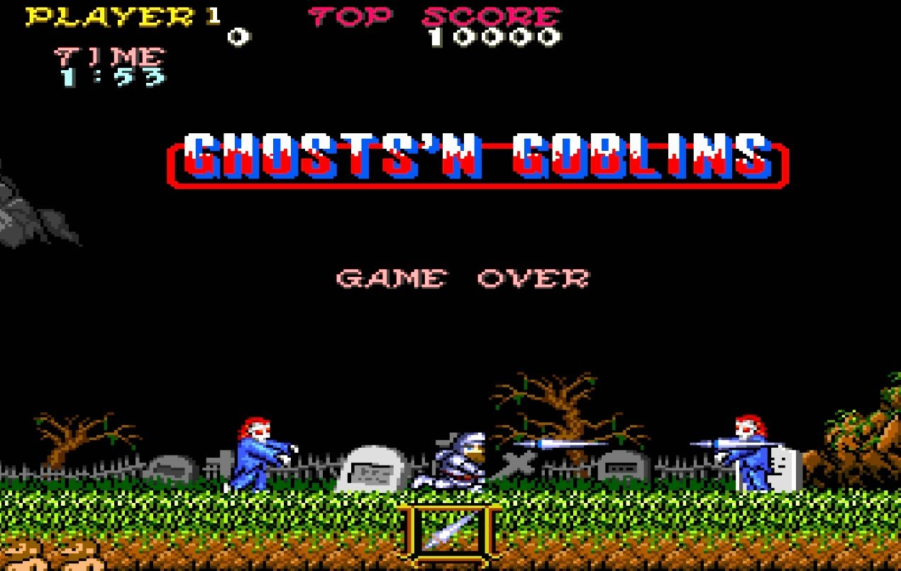
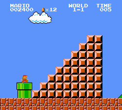
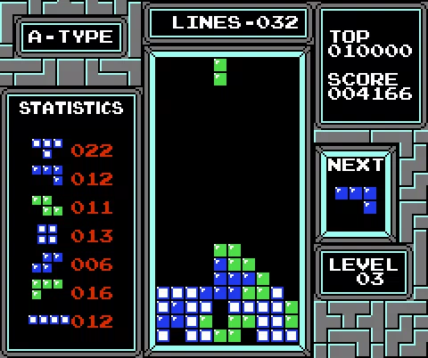

>
En este año comenzaron a recuperarse los videojuegos. Nintendo lanzó la Famicom
en América tras el gran éxito en Japón, que pasaria a llamarse
NES
para el resto del globo.
<

>
Los juegos más importantes de este año fueron: Pitfall 2 de Sega, Indiana Jones and the Temple of Doom y Empire Strikes Back de Atari, Ghosts'N Goblins de Capcom y Dig Dug 2 de Namco.
Merece especial atención el Tehkan World Cup (uno de los primeros videojuegos de
futbol).
<
>
Además en mayo de este año se comienza la publicación de la revista de videojuegos más
antigua dentro del territorio español, MicroMania <

> Nintendo lanza Super Mario Bros, creado para la NES y diseñado por Shigeru Miyamoto.
Ya había aparecido en los juegos de Donkey Kong y Mario Bros,
pero este juego fue el que lo llevó al estrellato hasta convertirlo en la
mascota principal de la compañía.
En este juego vemos por primera vez a la Princesa Peach, a Toad y a Bowser.
Creó un antes y un después en el mundo de los videojuegos y vendió millones
de copias dando un gran éxito a la Famicom/NES.
<

>
También nace otro de los juegos más importantes de la historia, el Tetris,
inventado por Alexey Pazhintov inspirado en un juego de pentaminós, cuando estaba trabajando en la Academia de Ciencias de Moscú.
Su primer juego incluyó siete formas construidas a partir de bloques
cuadrados, de allí viene el nombre de Tetris.
<